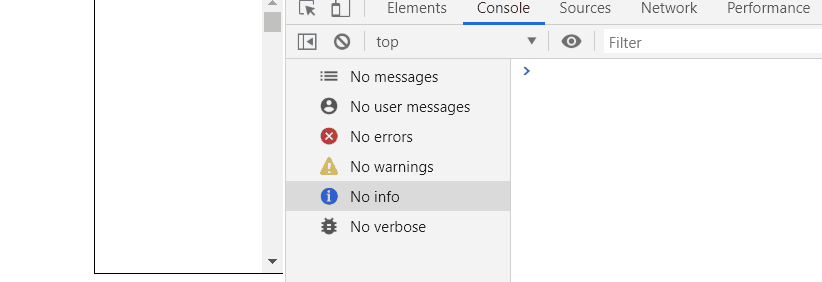
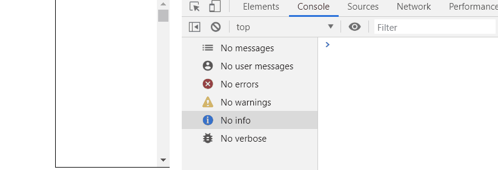
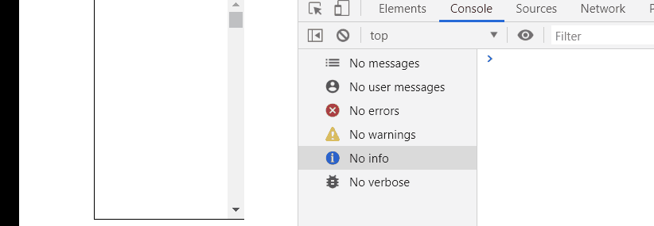

它们都是为了解决事件的频繁触发而出现的
不同之处：
防抖： 当事件频繁触发时不执行事件处理函数，
只有空闲下来的时候才会执行事件处理函数，
（比如一个搜素场景， 当用户正在输入的时候不触发搜索
只有当用户停止输入时才发起搜索请求）。
节流： 当事件频繁触发时规定一定时间内只触发一次事件处理函数，
比如 规定3秒内 ， 无论事件触发了多少次， 事件处理函数只执行一次
（比如一个抢购场景，先到先得， 普通用户疯狂点击抢购按钮抢购，
外挂用户使用脚本一秒钟抢1000次， 这时候加上节流，规定一秒钟只能
抢一次，这样就保证了公平性）
先看一下一个滚动不加防抖和节流的效果：
const scrollSection = document.getElementsByClassName('scroll-section')[0];
scrollSection.addEventListener('scroll',callback, false);
function callback() {
console.log('滚动')
}
使用节流：
const scrollSection = document.getElementsByClassName('scroll-section')[0];
scrollSection.addEventListener('scroll',callback, false);
let canPlay = true;
function callback() {
if (!canPlay) {
return
}
canPlay = false;
setTimeout(() => {
console.log('节流');
canPlay = true;
}, 2000)
}
通过一个开关来控制是否打印， 2秒内无论滚动多少次，
由于开关是false，所以都不会触发事件处理函数，只有2秒后，
开关变成true才触发，我们把它封装成一个函数throttle
const scrollSection = document.getElementsByClassName('scroll-section')[0];
const params = ['节流'];
scrollSection.addEventListener('scroll',throttle(callback,2000,...params), false);
function callback(str) {
console.log(str);
}
// 节流函数
function throttle(cb,wait) {
let canPlay = true;
// 截取传递过来的参数
const args = [].slice.call(arguments, 2);
// 保存函数上下文对象
const self = this;
return function () {
if (!canPlay) {
return
}
canPlay = false;
setTimeout(() => {
cb.apply(self, args);
canPlay = true;
}, wait)
}
}我们只需要把要做节流的回调函数,等待的时间和回调函数的参数传入throttle中即可，
效果和上面一样。
还有一种方法：
function throttle1(cb, wait) {
let preTime = 0;
// 截取传递过来的参数
const args = [].slice.call(arguments, 2);
// 保存函数上下文对象
const self = this;
return function () {
const lastTime = new Date().getTime();
if (lastTime - preTime < wait) {
return
}
cb.apply(self, args);
preTime = lastTime;
}
}每次比较一下当前时间和上一次保存的时间， 只有
两者的差值大于wait的时候才会触发回调函数， 这种方法和上一种方法的
唯一区别就是这种方法一进去就触发了一次，
两种方法根据需求来选择了，
如果要延迟触发就选第一种，
如果要立即触发一次就选第二种。
使用防抖：
const scrollSection = document.getElementsByClassName('scroll-section')[0];
const params = ['防抖'];
scrollSection.addEventListener('scroll',deBounce(callback,2000,...params), false);
function callback(str) {
console.log(str);
}
// 防抖函数
function deBounce(cb, wait) {
let timer = null;
// 截取传递过来的参数
const args = [].slice.call(arguments, 2);
// 保存函数上下文对象
const self = this;
return function () {
if (timer) {
clearTimeout(timer);
}
timer = setTimeout(() => {
cb.apply(self, args);
}, wait)
}
}原理： 如果事件一直触发， 每次触发把前一次的定时器给清除，这样事件处理函数就一直不会触发，
只有当事件停止触发两秒后，才会触发事件处理函数。

感谢观看